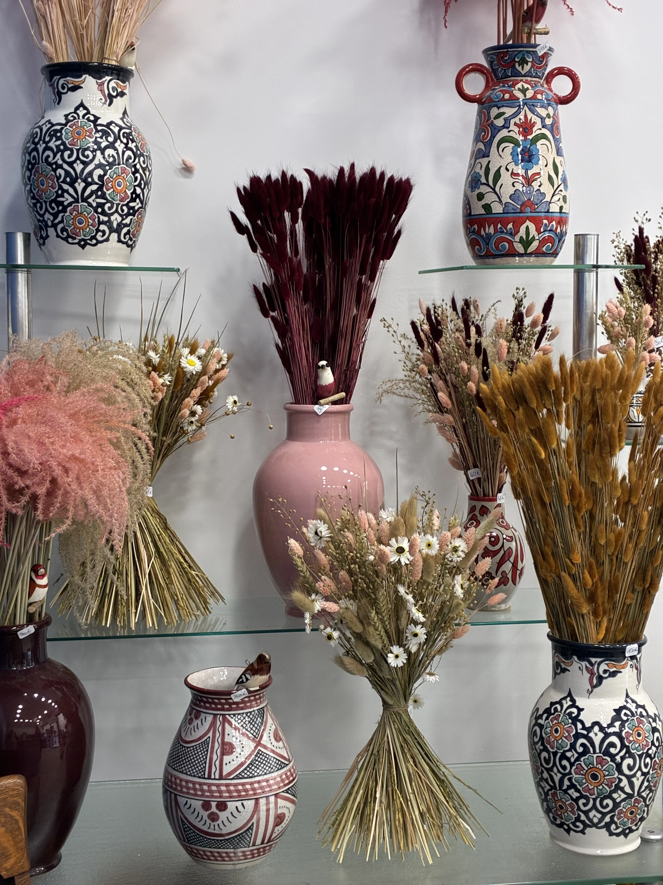

Inspiration déco
Publié le 10 janvier 2026 · Lecture 5 min
Fleurs séchées : idées pour une décoration douce et durable

Les fleurs séchées connaissent un retour remarqué dans nos intérieurs. Bien loin d'être démodées, elles incarnent aujourd'hui une approche plus durable de la décoration, tout en apportant chaleur, poésie et une touche bohème-chic à chaque pièce. À l'atelier Fleurs de Nila, nous adorons travailler ces matières qui racontent une autre histoire du temps qui passe.
Pourquoi adopter les fleurs séchées ?
Les fleurs séchées présentent de nombreux avantages qui en font un choix judicieux pour la décoration d'intérieur. Contrairement aux fleurs fraîches, elles ne nécessitent aucun entretien : pas d'eau à changer, pas de tiges à recouper, elles gardent leur beauté pendant des mois, voire des années si elles sont bien protégées de l'humidité et du soleil direct.
Au-delà de leur côté pratique, elles incarnent une démarche plus écoresponsable. Plutôt que de jeter votre bouquet en fin de vie, vous pouvez le faire sécher et lui offrir une seconde existence décorative. C'est une façon poétique de prolonger le plaisir et de réduire le gaspillage. Leurs teintes douces – beiges, roses poudré, ocres, verts sauge – apportent une atmosphère apaisante et intemporelle à votre maison.
Le traditionnel bouquet revisité
Le bouquet de fleurs séchées est la forme la plus classique mais aussi la plus versatile. Dans un salon, une chambre ou sur une table, il apporte immédiatement une touche naturelle et raffinée. Les possibilités sont infinies : hortensia aux teintes fanées, mimosa doré, graminées vaporeuses, pampas imposantes, immortelles colorées...
Le choix du contenant est tout aussi important que les fleurs elles-mêmes. Un vase en verre transparent met en valeur la structure des tiges, un pot en céramique mat crée un contraste élégant, tandis qu'un vase en terre cuite apporte une dimension plus rustique. N'hésitez pas à jouer sur les hauteurs et les volumes pour créer un arrangement qui a du caractère.
Compositions murales et suspensions
Au lieu de placer vos fleurs séchées uniquement dans des vases, pensez à les accrocher. Une couronne de fleurs séchées sur une porte ou un mur apporte une touche accueillante et champêtre. Vous pouvez également créer des bouquets suspendus, tête en bas, attachés avec une ficelle de jute ou un ruban de lin, pour un effet bohème assumé.
Les branches d'eucalyptus séché, par exemple, se prêtent parfaitement à cette présentation suspendue, notamment dans une salle de bain où elles dégagent un parfum subtil au contact de la vapeur d'eau. C'est une manière simple et spectaculaire d'habiller un mur nu ou de créer un point focal dans une pièce.
Créations dans des bocaux et cloches de verre
Les bocaux en verre et les cloches sont parfaits pour mettre en scène vos fleurs séchées tout en les protégeant de la poussière. Cette présentation, à la fois vintage et contemporaine, crée de véritables petites compositions sous verre qui attirent le regard.
Vous pouvez recycler d'anciens bocaux, bouteilles ou carafes en verre pour y glisser quelques tiges de fleurs séchées. Cette approche zéro déchet s'inscrit parfaitement dans une démarche durable. Disposés sur des étagères, une cheminée ou un rebord de fenêtre, ces petits arrangements créent une collection harmonieuse.
Paniers et corbeilles pour un style authentique
Voici une alternative originale aux traditionnels vases : les paniers en osier, rotin ou fibres naturelles. Ils apportent instantanément une dimension artisanale et chaleureuse à votre décoration. Placés au sol dans un coin de la pièce ou accrochés aux murs, ils créent un effet très nature.
Les paniers permettent également de jouer avec les volumes : un grand panier au sol peut accueillir un bouquet généreux de pampas ou de grandes graminées, tandis que de petits paniers muraux peuvent contenir des arrangements plus délicats de lavande ou d'immortelles.
Intégrer les fleurs séchées dans l'art de la table
Les fleurs séchées ne se limitent pas à la décoration murale ou aux étagères. Elles sont également magnifiques sur une table, que ce soit pour un repas du quotidien ou pour une occasion spéciale. Une simple tige d'eucalyptus glissée dans un rond de serviette, quelques épis de blé posés sur une nappe en lin, ou un petit bouquet au centre de la table suffisent à créer une ambiance raffinée et naturelle.
Pour un mariage, un anniversaire ou un dîner entre amis, les fleurs séchées permettent de préparer votre décoration bien à l'avance sans vous soucier de leur fraîcheur. Elles apportent une touche romantique et bohème qui fonctionne particulièrement bien dans les événements en extérieur ou dans des lieux au charme rustique.
Conseils pour bien conserver vos fleurs séchées
Bien que les fleurs séchées soient faciles d'entretien, quelques précautions permettent de les garder belles plus longtemps. Évitez de les placer en plein soleil, car les UV peuvent décolorer les teintes délicates. Tenez-les également éloignées des sources d'humidité excessive qui pourraient provoquer de la moisissure.
La poussière est l'ennemi principal des fleurs séchées. Un petit coup de sèche-cheveux en mode froid, à distance raisonnable, permet de les dépoussiérer délicatement sans les abîmer. Pour les compositions sous cloche ou en bocal, le problème est évidemment beaucoup moins prégnant.
Enfin, si certaines fleurs perdent de leur éclat avec le temps, n'hésitez pas à les renouveler ou à les compléter avec de nouvelles variétés. C'est l'occasion de recomposer vos arrangements au fil des saisons et de vos envies.
Les fleurs séchées offrent une infinité de possibilités créatives pour décorer votre intérieur de manière durable et poétique. À l'atelier Fleurs de Nila, nous proposons une sélection de bouquets séchés et nous sommes toujours ravis de vous conseiller sur les meilleures compositions selon votre style et votre espace. N'hésitez pas à passer nous voir pour découvrir nos créations du moment !